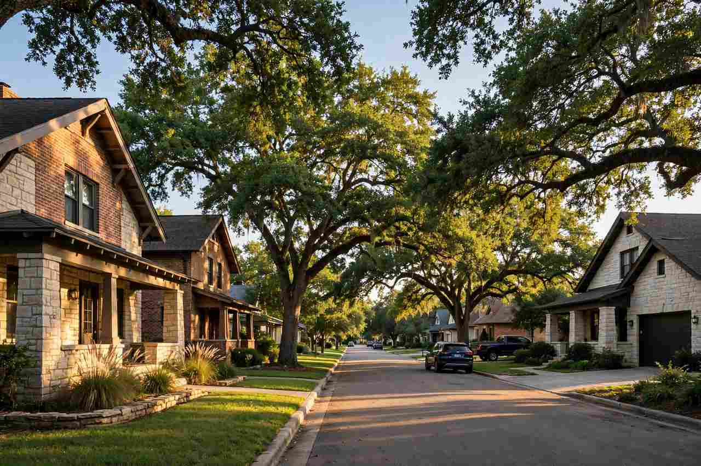

Rodent Control · San Benito, TX
Fast Rodent Control in San Benito, TX
Rats in the attic or mice in the kitchen in San Benito? Murvo provides same-day rodent control with local crews who inspect first, remove the animals already inside, and seal the entry points they used. Every job is quoted flat-rate in writing before work begins and backed by a written guarantee, covering homes and businesses across Cameron County. Service covers 1 ZIP codes across Cameron County, including 78586, with same-day appointments where schedules allow.
24/7Availability
1ZIP codes covered
Same-dayResponse
Licensed · Upfront options · Written guarantees · Fully insured
San Benito at a glance
Local Rodent Control for San Benito, TX.
Cameron County
Countysoutheast Texas
RegionHarlingen · 5 mi
Nearest metro286 miles south of Austin
From Austin1
ZIP codes covered Service by service in San Benito
Rodent Control Services Available in San Benito
Thirty rodent services, one local standard in San Benito: inspection-led, exclusion-first, and quoted in writing before work begins. Browse the full list for Cameron County below - each section explains what the service involves here, what it typically costs nationally, and how fast we can start.
- 01Rodent Control↗
- 02Rodent Inspection↗
- 03Rodent Removal↗
- 04Rodent Exclusion↗
- 05Rodent Proofing↗
- 06Rat Control↗
- 07Mice Control↗
- 08Mouse Removal↗
- 09Rat Removal↗
- 10Rodent Trapping↗
- 11Rodent Baiting↗
- 12Rodenticide Application↗
- 13Attic Rodent Removal↗
- 14Crawl Space Rodent Removal↗
- 15Wall Rodent Removal↗
- 16Kitchen Rodent Control↗
- 17Garage Rodent Control↗
- 18Commercial Rodent Control↗
- 19Residential Rodent Control↗
- 20Emergency Rodent Removal↗
- 21Same-Day Rodent Control↗
- 22Rodent Damage Repair↗
- 23Rodent Waste Cleanup↗
- 24Rodent Disinfection↗
- 25Rodent Odor Removal↗
- 26Dead Rodent Removal↗
- 27Rodent Dropping Cleanup↗
- 28Rodent Exclusion for Roofs↗
- 29Rodent Exclusion for Vents↗
- 30Rodent Exclusion for Chimneys↗
Rodent Control in San Benito
Rodent Control in San Benito
What does a finished job actually look like? No new droppings, no nighttime movement, and no open route back inside. That is the standard Murvo works toward in San Benito, with background-checked technicians, a written workmanship guarantee, and follow-up checks that confirm the quiet is real rather than temporary luck.
In San Benito, rodent control is not a generic spray-and-go service. Rodents exploit rooflines and attic vents, garage door seals, weep holes, and foundation cracks opened by shifting clay soil in ranch and suburban single-family homes, older bungalows, and new-build subdivisions, and a fix that ignores those routes does not last. Murvo's San Benito team inspects first, shows you the evidence - droppings, gnaw marks, entry gaps - and then lays out the work with a flat-rate written quote. We serve all of Cameron County from San Benito, including El Camino Angosto, Lago, and every job is covered by our written workmanship guarantee. In San Benito, rodent control calls most often involve ranch and suburban single-family homes, older bungalows, and new-build subdivisions, where rooflines and attic vents, garage door seals, weep holes, and foundation cracks opened by shifting clay soil decide whether the fix holds.
We start by identifying whether Roof rat (Rattus rattus), Norway rat (Rattus norvegicus), or both are active, because each species nests, feeds, and travels differently. Once numbers fall, exclusion sealing closes the route back in, droppings and nesting debris are removed hygienically, and follow-up monitoring checks the attic, crawl space, and kitchen until readings stay clear. Nothing is sealed while animals remain inside. Traps are placed on proven runways along walls, beams, and pipe runs, checked on schedule, and adjusted as catches change. That order protects your home.
After you book, we confirm a time window and your background-checked technician arrives in a marked vehicle with identification. You receive a flat-rate written quote before any work starts. Once approved, trapping and sealing begin, and follow-up visits are scheduled before we leave, with the guarantee in writing. They walk the property with you, inspect inside and out, and explain what they find with photos. No work begins without your approval.
In most of San Benito, we can offer a same-day appointment for rodent control, and our lines are open 24/7 for urgent cases like scratching in the walls or a rodent in a living area. Your technician inspects first, explains the plan, and quotes a flat rate in writing before any work begins, so help starts fast without surprises. Murvo's San Benito crews explain the finding either way, and the flat-rate quote leaves the decision with you.
The honest answer is that it depends on species, activity level, and how much sealing your home needs, which is why Murvo inspects first and then gives you a flat-rate quote in writing. For national context only, Angi's 2026 data averages rat and mouse removal and control at $396, typically $189 to $655; that is not a Murvo price, and your written quote is the figure you pay.
Rodent Inspection in San Benito
Rodent Inspection in San Benito
A proper rodent inspection in San Benito answers three questions: which species is active, where is it nesting, and how is it getting inside? Our licensed, insured technicians document runways, droppings, and damage with photos and plain-language notes, then separate urgent fixes from preventive ones. There is no pressure to proceed, and every recommendation is priced in writing first.
In San Benito, rodent inspection is not a generic spray-and-go service. Rodents exploit rooflines and attic vents, garage door seals, weep holes, and foundation cracks opened by shifting clay soil in ranch and suburban single-family homes, older bungalows, and new-build subdivisions, and a fix that ignores those routes does not last. Murvo's San Benito team inspects first, shows you the evidence - droppings, gnaw marks, entry gaps - and then lays out the work with a flat-rate written quote. We serve all of Cameron County from San Benito, including El Camino Angosto, Lago, and every job is covered by our written workmanship guarantee. Seasonal timing matters for rodent inspection in San Benito: rodents surge in San Benito from September through March.
We listen first: when you hear noises, and where, often points straight to the most active nesting areas. The visit ends with a written report covering species, entry points, contamination, and the removal and exclusion steps we recommend, each with a flat-rate price. Technicians then trace active runways, identify whether droppings belong to Roof rat (Rattus rattus) or Norway rat (Rattus norvegicus), and check insulation and wiring for damage. That detail stops you paying for treatment aimed at the wrong species or the wrong part of the building.
After booking, we confirm your time window by text or call. Before leaving, they review photos and priorities with you, leave the written findings, and schedule any follow-up work you approve. On arrival, your background-checked technician checks in, protects floors and access points, and works through a set inspection checklist inside and out. The inspection itself is backed by licensed, insured service and our written workmanship guarantee on quoted work.
You do not have to wait days for answers in San Benito. Same-day rodent inspection appointments are available in most areas, urgent calls are taken 24/7, and most home inspections take under an hour. You finish the visit with photos, written findings, and flat-rate pricing for anything we recommend. The written quote for your San Benito property will spell out exactly which of these applies before any work starts.
Nationally, a professional rodent inspection typically runs $100 to $200 according to Angi's 2026 data, and it is often credited toward the job if you proceed. Murvo confirms your exact rodent inspection price before the visit and quotes any follow-up work as a flat rate in writing after inspection, so the figure you approve is the figure you pay, with no hourly billing.
Rodent Removal in San Benito
Rodent Removal in San Benito
In ranch and suburban single-family homes, older bungalows, and new-build subdivisions, removal fails when it ignores how rodents actually live: close to food, water, and undisturbed cover near rooflines and attic vents, garage door seals, weep holes, and foundation cracks opened by shifting clay soil. Our rodent removal in Cameron County starts by mapping that daily pattern, then removes animals room by room, including attics and garages, until monitoring, not optimism, says the home is clear.
When you need rodent removal in San Benito, the job starts with what is actually happening in your part of Cameron County. Murvo crews work San Benito every week, so they know how Roof rat (Rattus rattus) and Norway rat (Rattus norvegicus) behave around ranch and suburban single-family homes, older bungalows, and new-build subdivisions here - and where they get in: rooflines and attic vents, garage door seals, weep holes, and foundation cracks opened by shifting clay soil. We arrive equipped for the full job, confirm the flat rate in writing before work begins, and cover the whole San Benito area, including El Camino Angosto, Lago. No call-center runaround and no open-ended hourly billing - just a local crew, a clear plan, and a written quote you approve first. In San Benito, rodent removal calls most often involve ranch and suburban single-family homes, older bungalows, and new-build subdivisions, where rooflines and attic vents, garage door seals, weep holes, and foundation cracks opened by shifting clay soil decide whether the fix holds.
We favor trap-based, no-poison removal first where practical, which is safer around children and pets and avoids animals dying in hidden voids. Traps are matched to the species and setting, placed where droppings and rub marks show real travel routes, then cleared and reset until numbers reach zero. Dead animals in inaccessible places are located and retrieved before odor develops, contaminated nesting material is removed, and sealing recommendations are prioritized so the route indoors closes permanently. Monitoring then confirms the home stays clear.
Same-day removal appointments are available across much of San Benito for active infestations. Every stage is explained in plain language as work proceeds. After a quick inspection, your background-checked technician explains the trapping plan and gives you a flat-rate written quote; work starts only with your approval. Follow-up checks are booked before we leave, contaminated areas are made safe, and monitoring confirms the property is clear before we sign off. You keep copies of all visit records.
When rodents are active indoors in San Benito, waiting rarely helps. Rodent removal can usually start the same day you call, our line answers 24/7 for a rodent loose in a living area, and the first visit sets traps straight away. Scheduled returns then clear and reset them until monitoring shows the home is clear. In Cameron County, most cases involve the Roof rat (Rattus rattus) and the Norway rat (Rattus norvegicus), so the inspection focuses on their routes first.
How many animals are active, which species they are, and how much sealing follows removal all shape the price, so we assess first and then quote one flat rate in writing. Angi's 2026 national context — an average of $396 and a typical $189 to $655 range for rat and mouse removal — is provided for comparison only; your written quote is the exact Murvo figure.
Rodent Exclusion in San Benito
Rodent Exclusion in San Benito
In ranch and suburban single-family homes, older bungalows, and new-build subdivisions, exclusion is detective work as much as building work. Rub marks at rooflines and attic vents, garage door seals, weep holes, and foundation cracks opened by shifting clay soil, droppings below a vent, and daylight under a door each point somewhere different in Cameron County homes. Our technicians follow those clues for Roof rat (Rattus rattus) and Norway rat (Rattus norvegicus), prioritize active openings, and leave inactive weaknesses clearly noted.
In San Benito, rodent exclusion is not a generic spray-and-go service. Rodents exploit rooflines and attic vents, garage door seals, weep holes, and foundation cracks opened by shifting clay soil in ranch and suburban single-family homes, older bungalows, and new-build subdivisions, and a fix that ignores those routes does not last. Murvo's San Benito team inspects first, shows you the evidence - droppings, gnaw marks, entry gaps - and then lays out the work with a flat-rate written quote. We serve all of Cameron County from San Benito, including El Camino Angosto, Lago, and every job is covered by our written workmanship guarantee. Coverage for rodent exclusion spans 1 ZIP codes in Cameron County, including 78586.
Before any sealing, active rodents are cleared with trapping so nothing is trapped inside the structure. Because exclusion removes the route in rather than relying on chemicals, it reduces the need for rodenticides and supports pet-safe, no-poison control. A final walkthrough shows you every protected opening, and monitoring checks confirm no new activity appears at sealed points. We then work opening by opening around rooflines and attic vents, garage door seals, weep holes, and foundation cracks opened by shifting clay soil, rooflines, and utility penetrations, photographing each finished seal. Every seal is listed on your written guarantee.
Book the survey, and we will work around your schedule, including urgent openings near wiring or food storage. Approved work is completed opening by opening, photographed as it progresses, and reviewed with you before the visit ends. Your technician lists every gap found, explains which are active, and quotes the sealing as one written figure. The finished inventory lists every material used at every opening, which makes later inspections faster and keeps the guarantee easy to enforce.
Rodent exclusion in San Benito usually starts with a survey visit we can often schedule the same day you call. Sealing itself is booked as soon as any active animals are cleared, because nothing is sealed inside. Most homes are fully sealed within days, not weeks, and urgent entry points near wiring or food areas are prioritized first. The written quote for your San Benito property will spell out exactly which of these applies before any work starts.
After the survey of your San Benito home, every opening that needs sealing is listed and priced as one flat-rate written quote, so you pay only for the work your property needs. For national context, Angi's 2026 data puts basic exclusion at $200 to $600 depending on access and the number of openings; that benchmark is not a Murvo price.
Rodent Proofing in San Benito
Rodent Proofing in San Benito
Rodents in Cameron County hunt for indoor shelter, food, and water in every season, and unsealed homes are found fast. A Murvo rodent proofing survey checks the roofline, vents, utility entries, and doors before that rush begins. Because proofing prevents infestations instead of reacting to them, it reduces reliance on baits and is backed by our written workmanship guarantee.
Homeowners in San Benito call Murvo for rodent proofing because the problem here is specific: Roof rat (Rattus rattus) pressure around ranch and suburban single-family homes, older bungalows, and new-build subdivisions, tight access at rooflines and attic vents, garage door seals, weep holes, and foundation cracks opened by shifting clay soil, and activity that follows the local season. Our Cameron County crews diagnose the real source before recommending work, explain the options in plain language, and quote one flat rate in writing. Across San Benito - including El Camino Angosto, Lago - every visit is backed by licensed, insured technicians and our written workmanship guarantee. Around Harlingen, La Paloma, Villa del Sol, the pattern is similar: Norway rat (Rattus norvegicus) finds rooflines and attic vents, garage door seals, weep holes, and foundation cracks opened by shifting clay soil first, and lasting rodent proofing has to close those routes.
Where proofing overlaps with structural exclusion, we use the same chew-resistant materials: copper mesh, hardware cloth, metal flashing, and durable sealants matched to each opening. Around kitchens, we coordinate sealing behind units and along pipe runs; in garages, we tackle stored-food and clutter harborage directly. The written plan distinguishes homeowner tasks from professional work, and seasonal re-checks after completion catch new gaps early, before they can turn into another indoor infestation for your household. That keeps protection current year after year.
Arrange a survey at a time that suits you; there is no emergency, so scheduling stays relaxed. Your technician walks every side of the property with you, photographs weak points, and talks through the plan in plain language. You then receive a written quote separating essential work from optional improvements, and nothing proceeds without your say-so. Staging the work is fine; essential sealing can proceed first while optional improvements wait until a season or budget that suits you better.
Proofing is planned work rather than an emergency, but you can still move fast: rodent proofing surveys in San Benito are often available the same day and always within a few days. Once you approve the plan, most work is finished in a single visit, ideally before colder weather drives rodents indoors. Murvo's San Benito crews explain the finding either way, and the flat-rate quote leaves the decision with you.
We survey your San Benito property first, separate the quick wins you can handle yourself from the specialist sealing, and quote the professional work as one flat rate in writing so spending can be staged. Angi's 2026 national context puts exclusion, the core of proofing, at $200 to $600 for basic work — a benchmark only, not a Murvo price.
Rat Control in San Benito
Rat Control in San Benito
Rat problems escalate quietly across Cameron County: gnawed wiring, contaminated insulation, and droppings spreading through storage areas before anyone sees an animal. Murvo answers with same-day appointments where available and a 24/7 line for urgent cases. Every visit is documented, trapped rats are removed hygienically, and the program finishes with exclusion so the next group cannot simply move in.
When you need rat control in San Benito, the job starts with what is actually happening in your part of Cameron County. Murvo crews work San Benito every week, so they know how Roof rat (Rattus rattus) and Norway rat (Rattus norvegicus) behave around ranch and suburban single-family homes, older bungalows, and new-build subdivisions here - and where they get in: rooflines and attic vents, garage door seals, weep holes, and foundation cracks opened by shifting clay soil. We arrive equipped for the full job, confirm the flat rate in writing before work begins, and cover the whole San Benito area, including El Camino Angosto, Lago. No call-center runaround and no open-ended hourly billing - just a local crew, a clear plan, and a written quote you approve first. The San Benito crews who handle rat control also handle the follow-through - proofing, cleanup, and monitoring - so one visit can close the whole problem.
Control starts with species and route identification, because roof rats and Norway rats behave and enter very differently. Trapped rats are removed hygienically, and each visit is documented with locations and counts. We then pair the program with roofline and entry-point exclusion, plus attic removal and cleanup where nests are found overhead. Technicians pre-bait unset traps along proven runways so wary rats feed confidently, then set them and return to check, clear, and adjust placements until activity stops. Progress is visible at every visit.
Between visits, keep pet food secured and avoid moving any traps, even slightly, since position matters. The program closes only when monitoring confirms activity has ended and exclusion is finished, with your guarantee confirmed in writing at sign-off. Your background-checked technician returns on schedule, removes trapped rats promptly, adjusts placements, and reports counts plainly. Keep gates and access points available on scheduled days where possible, since uninterrupted checks keep the program on its planned timetable.
Rats do not wait, and neither do we: rat control in San Benito can usually start with a same-day inspection, and urgent calls are answered 24/7. Pre-baiting begins on the first visit once you approve the written quote, traps are set as soon as rats are feeding confidently, and scheduled checks keep the program moving until activity stops. A San Benito inspection confirms it on site - dropping size, gnaw marks, and entry points tell the story quickly.
Rat work varies with species, colony size, and how many entry points need sealing, so Murvo inspects first and quotes one flat rate in writing. For national context only, Angi's 2026 data averages rat control and removal at $396, typically $189 to $655. That benchmark is not a Murvo price; the written quote for your San Benito home is the exact figure you pay.
Mice Control in San Benito
Mice Control in San Benito
Mice slip into ranch and suburban single-family homes, older bungalows, and new-build subdivisions in San Benito through rooflines and attic vents, garage door seals, weep holes, and foundation cracks opened by shifting clay soil and settle near warmth and food: behind appliances, inside attic voids, and along pipe runs. Because they investigate new objects quickly, clustered traps work fast when placed correctly. Our licensed, insured technicians also advise on food storage and scent-trail cleaning, then confirm with follow-up visits that activity has genuinely stopped.
In San Benito, mice control is not a generic spray-and-go service. Rodents exploit rooflines and attic vents, garage door seals, weep holes, and foundation cracks opened by shifting clay soil in ranch and suburban single-family homes, older bungalows, and new-build subdivisions, and a fix that ignores those routes does not last. Murvo's San Benito team inspects first, shows you the evidence - droppings, gnaw marks, entry gaps - and then lays out the work with a flat-rate written quote. We serve all of Cameron County from San Benito, including El Camino Angosto, Lago, and every job is covered by our written workmanship guarantee. The San Benito crews who handle mice control also handle the follow-through - proofing, cleanup, and monitoring - so one visit can close the whole problem.
Hygiene is part of control, not an afterthought. Technicians also review how food, pet supplies, and bird seed are stored, since an open supply restarts activity quickly. The program favors traps over bait throughout, which keeps family kitchens safer and makes every result countable and visible. Droppings in cabinets are never dry-swept; surfaces are disinfected first, following careful practice, so contamination is not pushed into the air, and nesting debris is bagged and removed. Follow-up monitoring then verifies the kitchen, attic, and voids together, rather than treating each room in isolation.
Book with one call and tell us which rooms show signs; same-day surveys are often possible. Your technician inspects kitchen, attic, and voids, explains the route map, and quotes in writing before traps are set. Check visits are scheduled immediately, and each one reports catches plainly until the final confirmation visit shows activity has stopped. The final confirmation matters, because mice can go quiet briefly while a nest remains, and monitoring distinguishes quiet from genuinely finished.
Mice multiply fast, so mice control in San Benito is built to start fast too: a survey can often be arranged the same day you call, with traps set on that first visit once the quote is approved. Because mice investigate new objects quickly, catches usually begin soon after, and check visits follow until a final confirmation shows activity has stopped. Around San Benito, ranch and suburban single-family homes, older bungalows, and new-build subdivisions give rodents the most cover, which is why entry points get checked before traps are set.
The number of rooms affected and the amount of sealing required set the price, so Murvo surveys first and quotes one flat rate in writing. For national context only, Angi's 2026 data averages rat and mouse control and removal at $396, typically $189 to $655 — not a Murvo price; your written quote is exact.
Mouse Removal in San Benito
Mouse Removal in San Benito
In ranch and suburban single-family homes, older bungalows, and new-build subdivisions, warmth decides where mice settle: near boilers, behind appliances, inside kitchen cabinets, and along rooflines and attic vents, garage door seals, weep holes, and foundation cracks opened by shifting clay soil routes across Cameron County. Our mouse removal checks those warm pockets deliberately, including spots homeowners rarely open, so a hidden nest raising young does not survive to restart the problem weeks later.
In San Benito, mouse removal is not a generic spray-and-go service. Rodents exploit rooflines and attic vents, garage door seals, weep holes, and foundation cracks opened by shifting clay soil in ranch and suburban single-family homes, older bungalows, and new-build subdivisions, and a fix that ignores those routes does not last. Murvo's San Benito team inspects first, shows you the evidence - droppings, gnaw marks, entry gaps - and then lays out the work with a flat-rate written quote. We serve all of Cameron County from San Benito, including El Camino Angosto, Lago, and every job is covered by our written workmanship guarantee. Around Harlingen, La Paloma, Villa del Sol, the pattern is similar: Norway rat (Rattus norvegicus) finds rooflines and attic vents, garage door seals, weep holes, and foundation cracks opened by shifting clay soil first, and lasting mouse removal has to close those routes.
The survey comes first, and it is deliberately thorough. Lofts, under-floor voids, cabinets, and the spaces behind kitchen units are checked for nests, droppings, and stored food caches. Traps are then set in multiples at proven points, because a single trap rarely reflects colony size. Returns are scheduled tightly: catches are cleared, traps reset, and numbers tracked until they fall to zero and stay there across a confirming check before sealing begins. Photographs of nesting sites help here, because they reveal how far activity had spread before trapping began.
Booking takes one call. Work begins only after you approve the written quote, and trap checks are booked ahead so nothing drifts. At sign-off we review catch records together, confirm sealing is complete, and leave you with guarantee paperwork and prevention advice. We agree a time window, and your background-checked technician arrives ready to survey attics, cabinets, and voids in one visit. Rooms are confirmed fully safe to use again.
For mice active in kitchens or living areas of your San Benito home, mouse removal can often begin the same day you call. That first visit surveys nesting sites and sets traps as soon as you approve the quote, and because mice investigate traps quickly, catches usually start fast. Return visits continue until numbers reach zero. Around San Benito, ranch and suburban single-family homes, older bungalows, and new-build subdivisions give rodents the most cover, which is why entry points get checked before traps are set.
Rooms involved and sealing needed determine the cost of removal, so we survey first and agree a flat rate in writing before work begins. As national context only, Angi's 2026 data averages rat and mouse removal at $396, with a typical range of $189 to $655; that benchmark is not a Murvo price, and your written quote covers your exact program.
Rat Removal in San Benito
Rat Removal in San Benito
If rats are active in your San Benito home right now, Murvo offers a same-day response and a clear written plan, with lines open 24/7 for urgent cases. Removal is delivered as one coordinated job: trapping, hygienic disposal, prevention, and a final walkthrough with monitoring evidence, so you are never asked to simply take our word that activity ended.
In San Benito, rat removal is not a generic spray-and-go service. Rodents exploit rooflines and attic vents, garage door seals, weep holes, and foundation cracks opened by shifting clay soil in ranch and suburban single-family homes, older bungalows, and new-build subdivisions, and a fix that ignores those routes does not last. Murvo's San Benito team inspects first, shows you the evidence - droppings, gnaw marks, entry gaps - and then lays out the work with a flat-rate written quote. We serve all of Cameron County from San Benito, including El Camino Angosto, Lago, and every job is covered by our written workmanship guarantee. The San Benito crews who handle rat removal also handle the follow-through - proofing, cleanup, and monitoring - so one visit can close the whole problem.
We lead with trapping and exclusion in an integrated, pet-conscious approach, using locked bait stations only where genuinely justified and monitored on schedule. After clearance, contaminated insulation areas can be sanitized, and droppings are never dry-swept: following CDC guidance, surfaces are disinfected first before waste is removed. Monitoring devices and a final walkthrough then provide documented evidence that activity has ended, and ongoing proofing keeps drains, vents, and rooflines checked afterwards. That evidence is always shared with you in writing.
Help the program by securing food, clearing access to the attic or basement, and leaving traps exactly where placed. Sign-off includes the documented evidence, your guarantee in writing, and practical proofing guidance tailored to how rats reached your property in the first place. Your background-checked technician handles removal, adjustments, sanitation, and the final monitoring period. You also receive guidance on drains, vegetation, and storage specific to your property, aimed at discouraging the next colony from settling.
Rats in a living area cannot wait for a routine slot. In San Benito, rat removal can usually start the same day you call and our line answers 24/7 for urgent cases. Pre-baiting starts on the first visit after you approve the written quote, traps are set once rats feed confidently — typically within days — and frequent returns run until monitoring confirms the colony is gone. Around San Benito, ranch and suburban single-family homes, older bungalows, and new-build subdivisions give rodents the most cover, which is why entry points get checked before traps are set.
Colony size, access, and the sealing needed afterwards drive the price, so Murvo assesses the property first and quotes a flat rate in writing covering the full program. Angi's 2026 data, for national context only, averages rat removal at $396 and typically ranges from $189 to $655; that is a benchmark, not a Murvo price.
Rodent Trapping in San Benito
Rodent Trapping in San Benito
Good trapping is species craft, not guesswork. In San Benito, wary Roof rat (Rattus rattus) need unset traps pre-baited for several days before they will feed confidently, while Norway rat (Rattus norvegicus) respond to clustered traps at activity hotspots. Our technicians match trap types and baits to the species and setting, from food lures in kitchens to robust devices for larger rats in basements.
In San Benito, rodent trapping is not a generic spray-and-go service. Rodents exploit rooflines and attic vents, garage door seals, weep holes, and foundation cracks opened by shifting clay soil in ranch and suburban single-family homes, older bungalows, and new-build subdivisions, and a fix that ignores those routes does not last. Murvo's San Benito team inspects first, shows you the evidence - droppings, gnaw marks, entry gaps - and then lays out the work with a flat-rate written quote. We serve all of Cameron County from San Benito, including El Camino Angosto, Lago, and every job is covered by our written workmanship guarantee. Coverage for rodent trapping spans 1 ZIP codes in Cameron County, including 78586.
Trap selection covers snap traps for quick, humane dispatch, multi-catch devices for busy mouse routes, and live-capture options where you prefer release away from the home. Baits and lures are matched to species and location, and all devices are positioned with pet and child safety in mind and explained to your household. As catches fall, we recommend exclusion sealing, plus droppings cleanup for affected areas, moving the program from active trapping to monitoring and final sign-off. Every device location is mapped for you.
Book rodent trapping in San Benito and a technician can often start the same day. The first visit inspects, maps activity, and places or pre-baits traps; you approve a flat-rate written quote covering the program including check visits before we proceed. Scheduled returns clear and reset traps and share catch records with you. When numbers reach zero, we confirm monitoring is clear and discuss sealing. The finished program is guaranteed in writing.
In San Benito, rodent trapping can usually start the same day you call, with traps placed or pre-baiting begun on the first visit after you approve the quote. Mice often investigate within the first night; wary rats need a few days of pre-baiting before traps are set. Scheduled check visits then keep catches moving until numbers reach zero. Around San Benito, ranch and suburban single-family homes, older bungalows, and new-build subdivisions give rodents the most cover, which is why entry points get checked before traps are set.
Trapping is usually quoted as part of a complete removal program rather than by the trap, and the price depends on species, activity level, and how many check visits are needed. Murvo inspects first and quotes one flat rate in writing covering the program and its check visits, so there are no per-visit surprises and no hourly billing at any stage.
Rodent Baiting in San Benito
Rodent Baiting in San Benito
State rules shape how baiting works in Texas: some states restrict anticoagulant rodenticides, and Murvo follows the strictest applicable limits on every job. Before any station is placed at your San Benito property, a technician maps activity, reviews pet and child concerns with you, and explains exactly what to watch for between monitoring visits. Nothing is placed without that conversation.
In San Benito, rodent baiting is not a generic spray-and-go service. Rodents exploit rooflines and attic vents, garage door seals, weep holes, and foundation cracks opened by shifting clay soil in ranch and suburban single-family homes, older bungalows, and new-build subdivisions, and a fix that ignores those routes does not last. Murvo's San Benito team inspects first, shows you the evidence - droppings, gnaw marks, entry gaps - and then lays out the work with a flat-rate written quote. We serve all of Cameron County from San Benito, including El Camino Angosto, Lago, and every job is covered by our written workmanship guarantee. The San Benito crews who handle rodent baiting also handle the follow-through - proofing, cleanup, and monitoring - so one visit can close the whole problem.
Baiting follows Inspect, Remove, Exclude, Clean, and Monitor, and it never stands alone. After a full inspection maps activity, background-checked technicians choose station locations along runways, fence lines, and entry points, away from pet play areas and food storage. Every station is tamper-resistant, locked, labeled, and anchored, with placement photographed for your records. We return on schedule to check consumption, record amounts, and adjust positions, and stations are removed when activity ends rather than left indefinitely. Loose bait is never used anywhere.
Booking starts with a conversation about pets, children, and wildlife on your property, because that shapes placement before we arrive. Approved stations are installed locked and labeled that visit, with monitoring dates booked before we leave. The inspection visit maps activity, agrees each proposed station location with you, and confirms the written quote. Nothing about placement, product type, or monitoring frequency is left vague, and you can ask for the record at any point.
In San Benito, rodent baiting starts with an inspection visit we can often arrange the same day you call. Stations are only placed after activity is mapped and you approve the written quote and each location, so setup is deliberate rather than rushed. Monitoring visits then run on a fixed schedule until consumption stops and activity is confirmed clear. A San Benito inspection confirms it on site - dropping size, gnaw marks, and entry points tell the story quickly.
Baiting cost depends on how many locked stations your property needs and how long monitoring runs, so Murvo inspects and maps activity first, then quotes one flat rate in writing covering placement and scheduled checks. There are no per-visit surprises, and because our approach is exclusion-first, the goal is always to reduce and eventually remove stations, not maintain them forever.
Rodenticide Application in San Benito
Rodenticide Application in San Benito
Our approach in San Benito is exclusion-first: seal entry points, trap active animals, and shrink the need for chemical control quickly. Where rodenticide application is genuinely justified for Roof rat (Rattus rattus) or Norway rat (Rattus norvegicus), a licensed technician maps, labels, and anchors every station, records amounts at each visit, and retrieves dead rodents promptly where accessible to reduce odor and secondary risks.
Homeowners in San Benito call Murvo for rodenticide application because the problem here is specific: Roof rat (Rattus rattus) pressure around ranch and suburban single-family homes, older bungalows, and new-build subdivisions, tight access at rooflines and attic vents, garage door seals, weep holes, and foundation cracks opened by shifting clay soil, and activity that follows the local season. Our Cameron County crews diagnose the real source before recommending work, explain the options in plain language, and quote one flat rate in writing. Across San Benito - including El Camino Angosto, Lago - every visit is backed by licensed, insured technicians and our written workmanship guarantee. The San Benito crews who handle rodenticide application also handle the follow-through - proofing, cleanup, and monitoring - so one visit can close the whole problem.
Monitoring data guides the whole treatment: whether it continues, changes product, or stops entirely in favor of proofing alone. Dead rodents are retrieved promptly where accessible, stations are kept away from pet and child areas, and every product used is documented with its label and safety information, so nothing applied at your property is ever hidden from you. We prioritize sealing entry points with exclusion and physical removal so dependence on chemical control shrinks visit by visit. State restrictions are checked before product selection.
Start with the inspection, often bookable the same day, and expect alternatives explained before products are discussed. Your licensed technician confirms whether treatment is justified, reviews safety information with you, and provides the written quote. Application happens only after approval, with monitoring visits scheduled and a clear stopping point agreed in advance. You can pause or stop the program at any point, and stopping triggers removal of stations rather than leaving them behind unattended.
In San Benito, rodenticide application begins with an inspection we can often schedule the same day you call, because no responsible application happens without one. If treatment is justified and you approve the written quote, locked stations are installed on that visit. Monitoring then runs on schedule, and treatment stops as soon as data shows activity has ended. Around San Benito, ranch and suburban single-family homes, older bungalows, and new-build subdivisions give rodents the most cover, which is why entry points get checked before traps are set.
Station numbers, the product permitted under Texas rules, and the length of monitoring all shape the price. Murvo inspects first, explains whether trapping or exclusion could avoid chemical control entirely, and then quotes one flat rate in writing before work begins. That quote covers scheduled monitoring visits, so there are no per-visit surprises later.
Attic Rodent Removal in San Benito
Attic Rodent Removal in San Benito
When chewed wiring appears overhead, treat it as urgent; damaged cables are a real fire risk. Murvo prioritizes those San Benito attics, clears animals with targeted trapping rather than poison, leaves monitoring briefly after sealing to confirm nothing remains inside, and backs the finished work with a written workmanship guarantee.
In San Benito, attic rodent removal is not a generic spray-and-go service. Rodents exploit rooflines and attic vents, garage door seals, weep holes, and foundation cracks opened by shifting clay soil in ranch and suburban single-family homes, older bungalows, and new-build subdivisions, and a fix that ignores those routes does not last. Murvo's San Benito team inspects first, shows you the evidence - droppings, gnaw marks, entry gaps - and then lays out the work with a flat-rate written quote. We serve all of Cameron County from San Benito, including El Camino Angosto, Lago, and every job is covered by our written workmanship guarantee. Around Harlingen, La Paloma, Villa del Sol, the pattern is similar: Norway rat (Rattus norvegicus) finds rooflines and attic vents, garage door seals, weep holes, and foundation cracks opened by shifting clay soil first, and lasting attic rodent removal has to close those routes.
Attic work follows Inspect, Remove, Exclude, Clean, and Monitor. Targeted, humane trapping is then set in the attic to clear active animals quickly, with checks on schedule. Once clear, roofline entry points are sealed with metal mesh and flashing as part of wider proofing, and dropping cleanup and disinfection are arranged where insulation is contaminated. A detailed inspection covers the attic, roof, and eaves, identifying species, nests, droppings, and gnawed cables. Monitoring traps stay briefly after sealing to confirm the attic is empty and quiet.
After booking, we confirm safe attic access and any pets or stored items to work around. On arrival, your background-checked technician inspects, explains the plan in plain language, and starts trapping once you approve the written quote. Follow-up visits are booked ahead to clear traps and complete sealing. A final monitoring check and walkthrough confirm the result before we close the job. Insulation and wiring findings are reported to you too.
Overhead scratching in San Benito often gets a same-day attic rodent removal visit, and attics with chewed wiring are prioritized because of the fire risk. Trapping starts on the first visit once you approve the written quote, checks run on schedule, and most attics are cleared and sealed within days. Monitoring stays in place briefly afterwards to confirm nothing remains inside. Murvo's San Benito crews explain the finding either way, and the flat-rate quote leaves the decision with you.
Attic costs depend on how many animals are active, how much sealing the roofline needs, and whether contaminated insulation requires cleanup, so Murvo inspects first and quotes one flat rate in writing. That quote covers the removal program described, with cleanup options priced separately in writing before you decide, so there are no surprises once work is underway.
Crawl Space Rodent Removal in San Benito
Crawl Space Rodent Removal in San Benito
Droppings under the house, a torn vapor barrier, and smells drifting up through the floors are classic signs rodents are living beneath your San Benito home. Murvo's crawl space rodent removal inspects the under-home space, traps active animals there, and seals foundation vents and gaps. Because activity below often connects to the attic through wall voids, we trace the full route.
When you need crawl space rodent removal in San Benito, the job starts with what is actually happening in your part of Cameron County. Murvo crews work San Benito every week, so they know how Roof rat (Rattus rattus) and Norway rat (Rattus norvegicus) behave around ranch and suburban single-family homes, older bungalows, and new-build subdivisions here - and where they get in: rooflines and attic vents, garage door seals, weep holes, and foundation cracks opened by shifting clay soil. We arrive equipped for the full job, confirm the flat rate in writing before work begins, and cover the whole San Benito area, including El Camino Angosto, Lago. No call-center runaround and no open-ended hourly billing - just a local crew, a clear plan, and a written quote you approve first. In San Benito, crawl space rodent removal calls most often involve ranch and suburban single-family homes, older bungalows, and new-build subdivisions, where rooflines and attic vents, garage door seals, weep holes, and foundation cracks opened by shifting clay soil decide whether the fix holds.
Cleanup below a home follows CDC guidance: droppings and nesting debris are never dry-swept, because disturbing them can spread contamination; surfaces are disinfected first, then waste is bagged and removed by technicians in protective equipment. We also trace connections upward through wall voids, since treating the crawl space alone misses rodents traveling to the attic. Photographs of finished sealing are supplied with your guarantee paperwork, and access panels are refitted securely after every visit. Moisture problems found are reported with practical recommendations.
Book crawl space rodent removal in San Benito and we will schedule an under-home inspection, often within days and sooner for strong odors or heavy activity. Monitoring confirms the space is quiet, and photographs of finished sealing accompany your guarantee. Your technician photographs conditions below, explains the plan, and confirms a flat-rate written quote before trapping starts. Clearance, vent screening, and cleanup then follow in sequence. No extra vents are billed beyond the agreed scope.
For crawl space rodent removal in San Benito, inspections are usually arranged within a few days — and sooner when odors are drifting into living areas or activity sounds heavy. Trapping begins on the first visit after you approve the written quote, clearance and sealing follow in sequence, and monitoring stays in place until the space below is confirmed quiet. In Cameron County, activity follows the local season, so timing the work matters as much as the method.
Access, the number of vents and gaps to seal, and whether waste cleanup is required all shape crawl-space pricing, so Murvo inspects first and quotes one flat rate in writing. Cleanup options are priced in writing before you decide whether to include them, and there are no surprise charges for extra vents within the agreed scope.
Wall Rodent Removal in San Benito
Wall Rodent Removal in San Benito
We deliberately avoid poison for wall problems in San Benito, because a poisoned rodent dying in a void creates exactly the odor problem homeowners fear. Trapping and exclusion are cleaner and safer around kids and pets. After removal, a quiet-wall check at different times of day confirms no second animal remains hidden in a connected void before we finish.
Homeowners in San Benito call Murvo for wall rodent removal because the problem here is specific: Roof rat (Rattus rattus) pressure around ranch and suburban single-family homes, older bungalows, and new-build subdivisions, tight access at rooflines and attic vents, garage door seals, weep holes, and foundation cracks opened by shifting clay soil, and activity that follows the local season. Our Cameron County crews diagnose the real source before recommending work, explain the options in plain language, and quote one flat rate in writing. Across San Benito - including El Camino Angosto, Lago - every visit is backed by licensed, insured technicians and our written workmanship guarantee. Coverage for wall rodent removal spans 1 ZIP codes in Cameron County, including 78586.
Once the void is clear, the route gets closed and the space made safe. Monitoring at key access points and repeat quiet-wall checks then confirm silence before any minimal, agreed access cut is made good. Baseboard and pipe gaps linked to kitchen activity are sealed as part of wider proofing. If a rodent has died inside, retrieval is followed by sanitation: contaminated material is never dry-swept, surfaces are disinfected first, and odor treatment discourages new animals from investigating. Only then is the job closed, with the monitoring record and any sanitation work documented for you.
Book wall rodent removal in San Benito and we will schedule a locating visit, often the same day for loud or persistent wall noise. Your technician traces the activity, explains exactly where the animal is traveling, and confirms a flat-rate written quote before any access work, so wall work never becomes an open-ended bill. Trapping and any agreed access follow, then sealing, sanitation, and monitoring complete the job. Your written guarantee covers the completed work.
In San Benito, wall rodent removal locating visits are often available the same day you call, especially for persistent scratching keeping you awake. Trapping is set at access points on that first visit once you approve the written quote, and because rodents travel the void nightly, results usually follow within days, confirmed by quiet-wall checks before we sign off. That is also why Murvo pairs removal with exclusion in San Benito - treating the animal without closing rooflines and attic vents, garage door seals, weep holes, and foundation cracks opened by shifting clay soil rarely lasts.
How precisely the activity can be located, and whether a minimal access cut turns out to be needed, decide the price of wall work. Murvo therefore locates the activity first and quotes a flat rate in writing, covering the trapping, sealing, and monitoring in your plan, so wall access never becomes an open-ended bill.
Kitchen Rodent Control in San Benito
Kitchen Rodent Control in San Benito
Kitchens in ranch and suburban single-family homes, older bungalows, and new-build subdivisions offer rodents food, water and warmth behind fridges, ovens and sinks. Murvo's kitchen rodent control in San Benito starts behind those appliances, removes the animals without loose poison near food, and leaves simple hygiene notes covering bins, pet bowls and rarely moved appliances. Background-checked technicians carry out every visit.
Homeowners in San Benito call Murvo for kitchen rodent control because the problem here is specific: Roof rat (Rattus rattus) pressure around ranch and suburban single-family homes, older bungalows, and new-build subdivisions, tight access at rooflines and attic vents, garage door seals, weep holes, and foundation cracks opened by shifting clay soil, and activity that follows the local season. Our Cameron County crews diagnose the real source before recommending work, explain the options in plain language, and quote one flat rate in writing. Across San Benito - including El Camino Angosto, Lago - every visit is backed by licensed, insured technicians and our written workmanship guarantee. The San Benito crews who handle kitchen rodent control also handle the follow-through - proofing, cleanup, and monitoring - so one visit can close the whole problem.
In tricky cases we use nighttime trail cameras to pinpoint exactly which gap a cautious mouse is traveling through. That combination, rather than a single treatment, is what keeps kitchens in San Benito rodent-free. The process combines targeted trapping, sealing of pipe, cabinet and kickboard gaps, disinfection guidance for contaminated food areas, and follow-up monitoring visits. Everything follows integrated pest management: remove the animals, block the routes, take away the food and water drawing them in. The same careful standard applies on every single visit.
Booking takes one call. Every stage is covered by our written workmanship guarantee. Your technician arrives as arranged, confirms where rodents are feeding and traveling, and talks you through a clear plan with one written flat-rate price. Traps are set discreetly, entry gaps sealed and food areas cleaned down. We return to check traps and monitoring points, adjust placement if needed, and confirm the kitchen is clear. Nothing starts until you have approved the written quote.
Our phone lines are open 24/7, and kitchen cases involving droppings near food preparation areas are treated as a priority. In many San Benito cases we can arrange a same-day visit, subject to technician availability. Call, describe what you have found, and we will offer the earliest appointment we can. Murvo's San Benito crews explain the finding either way, and the flat-rate quote leaves the decision with you.
For national context, Angi's 2026 figures put rat extermination at $189-$655, averaging $396, but those figures are not Murvo prices. What your kitchen needs — trapping, sealing and follow-up monitoring — is assessed on site first. Murvo then provides one flat-rate written quote with no hourly billing, and work only begins after you approve it.
Garage Rodent Control in San Benito
Garage Rodent Control in San Benito
In Cameron County garages often connect straight into kitchens, utility rooms and wall voids. Our garage rodent control tackles the garage as the front door it really is: thorough inspection, humane removal where possible, durable sealing, and practical storage advice that keeps rodents from settling in again. Help is available around the clock, every day.
When you need garage rodent control in San Benito, the job starts with what is actually happening in your part of Cameron County. Murvo crews work San Benito every week, so they know how Roof rat (Rattus rattus) and Norway rat (Rattus norvegicus) behave around ranch and suburban single-family homes, older bungalows, and new-build subdivisions here - and where they get in: rooflines and attic vents, garage door seals, weep holes, and foundation cracks opened by shifting clay soil. We arrive equipped for the full job, confirm the flat rate in writing before work begins, and cover the whole San Benito area, including El Camino Angosto, Lago. No call-center runaround and no open-ended hourly billing - just a local crew, a clear plan, and a written quote you approve first. Seasonal timing matters for garage rodent control in San Benito: rodents surge in San Benito from September through March.
Consider how a garage is actually used: bikes, bins, freezers and seasonal boxes all create hiding places. Removal follows the evidence we find. Then proofing closes wall gaps, vents and door edges, while damaged nesting material is cleared away. Our inspection moves zone by zone through that layout, noting food sources and the holes where cables or pipes cross into living areas. We also check connected rooms, since garage activity rarely stays contained, and schedule follow-up monitoring to confirm the whole route has shut down.
Once booked, your Murvo technician arrives at the agreed time, walks the garage with you and inspects doors, walls and storage. All work is covered by our written workmanship guarantee. You receive a flat-rate written quote before work starts. Approved work covers trapping, nest removal and sealing, carried out by a licensed, insured technician. We return for monitoring checks, confirm the garage is clear, and leave storage advice behind. We leave the area tidy when the work finishes.
We answer calls 24/7 and treat garages with active nesting, chewed wiring or rodents moving into the house as urgent. Same-day appointments in San Benito are often available, depending on technician schedules. Call with a description of the signs you have seen and we will offer you the earliest visit we can. That is also why Murvo pairs removal with exclusion in San Benito - treating the animal without closing rooflines and attic vents, garage door seals, weep holes, and foundation cracks opened by shifting clay soil rarely lasts.
As a national benchmark, Angi's 2026 data shows rat extermination ranging from $189-$655, with an average of $396; that is context only, not a Murvo price. Garage work varies with size, activity and the proofing doors and walls require. After inspecting, Murvo quotes one flat rate in writing for trapping, nest removal, sealing and monitoring, for your approval before anything starts.
Commercial Rodent Control in San Benito
Commercial Rodent Control in San Benito
Stock loss is only part of the cost. Rodents in a warehouse or dining room threaten ratings, contracts and customer trust just as quickly. In San Benito, we build a practical program around your trading hours: find the pressure points, remove activity discreetly, seal the routes, and keep records your next audit can actually use.
In San Benito, commercial rodent control is not a generic spray-and-go service. Rodents exploit rooflines and attic vents, garage door seals, weep holes, and foundation cracks opened by shifting clay soil in ranch and suburban single-family homes, older bungalows, and new-build subdivisions, and a fix that ignores those routes does not last. Murvo's San Benito team inspects first, shows you the evidence - droppings, gnaw marks, entry gaps - and then lays out the work with a flat-rate written quote. We serve all of Cameron County from San Benito, including El Camino Angosto, Lago, and every job is covered by our written workmanship guarantee. Homes near Harlingen tend to show activity first in San Benito, which is why inspections start with rooflines and attic vents, garage door seals, weep holes, and foundation cracks opened by shifting clay soil.
Your program begins away from the shop floor, in the places rodents prefer: docks, plant rooms, bin stores, ceiling voids and delivery entrances. We map activity there first, then connect it to sightings inside. Monitored traps are positioned discreetly, outdoor stations stay locked, and product use is logged in full. Exclusion targets dock seals, vents and service gaps. After each visit you receive a clear report covering findings, actions and trends, written so a restaurant manager or warehouse operator can hand it straight to an auditor.
After you make contact, a surveyor visits at a time that suits trading, inspects the whole site and identifies risks. Approved work begins discreetly, with reports after every visit for your audit file. Monitoring continues on schedule, trends are reviewed with you, and the program adjusts as activity falls. You receive a written proposal with flat-rate pricing for initial work before anything starts. Emergency response is available 24/7 for urgent sightings.
Our commercial lines are open 24/7, and live sightings during trading hours are treated as emergencies and handled discreetly. Response in San Benito depends on technician availability, but we will always offer the earliest visit we can and advise on immediate steps to protect stock, customers and your audit position. A San Benito inspection confirms it on site - dropping size, gnaw marks, and entry points tell the story quickly.
For wider context, Angi's 2026 figures put rat extermination at $189-$655, averaging $396 nationally, though commercial sites are scoped individually and those figures are not Murvo prices. Site size, sector, activity and the exclusion and monitoring required all shape the cost. Murvo surveys first, then quotes a flat rate in writing for initial work or a clear scheduled-service price for an ongoing program, with reports included for your audit file.
Residential Rodent Control in San Benito
Residential Rodent Control in San Benito
Hearing scratching at night or finding droppings in the attic is unsettling, especially with children or pets at home. Our residential rodent control in San Benito removes Roof rat (Rattus rattus) and Norway rat (Rattus norvegicus), seals the entry points they used, cleans contaminated areas and monitors until your home is properly clear. That is the standard Murvo works to in Texas.
When you need residential rodent control in San Benito, the job starts with what is actually happening in your part of Cameron County. Murvo crews work San Benito every week, so they know how Roof rat (Rattus rattus) and Norway rat (Rattus norvegicus) behave around ranch and suburban single-family homes, older bungalows, and new-build subdivisions here - and where they get in: rooflines and attic vents, garage door seals, weep holes, and foundation cracks opened by shifting clay soil. We arrive equipped for the full job, confirm the flat rate in writing before work begins, and cover the whole San Benito area, including El Camino Angosto, Lago. No call-center runaround and no open-ended hourly billing - just a local crew, a clear plan, and a written quote you approve first. Homes near Harlingen tend to show activity first in San Benito, which is why inspections start with rooflines and attic vents, garage door seals, weep holes, and foundation cracks opened by shifting clay soil.
Every home visit follows Inspect, Remove, Exclude, Clean and Monitor. Inspection covers attics, crawl spaces, garages, kitchens and the exterior, reading droppings, gnaw marks and rub marks to identify species and entry points such as rooflines and attic vents, garage door seals, weep holes, and foundation cracks opened by shifting clay soil. Removal uses targeted trapping placed safely away from children and pets. Exclusion seals the gaps found, cleanup disinfects contaminated areas, and monitoring visits confirm activity has ended rather than simply moved elsewhere in the house. Materials are chosen for durability, not the cheapest quick fix.
One call books your visit. Trapping, exclusion and disinfection follow, carried out by licensed and insured technicians. Follow-up checks confirm the home is clear and adjust anything still needed. If rodents return within the guarantee terms, we come back, exactly as your written guarantee sets out. On arrival we inspect first, explain findings in plain language, and quote the full price in writing, with no hourly billing. Questions are answered honestly throughout, with findings in writing.
You can call us 24/7, and homes where rodents are in living areas, kitchens or children's bedrooms are prioritized in scheduling. A same-day visit in San Benito is often possible, subject to technician availability. Share what you have seen or heard and we will offer the earliest appointment available, plus advice for the meantime. In Cameron County, activity follows the local season, so timing the work matters as much as the method.
Nationally, Angi's 2026 figures show rat extermination at $189-$655, averaging $396, but those are not Murvo prices for your home. Species, how established activity is, and the exclusion and cleanup needed determine the actual scope. Murvo inspects first and then gives one flat-rate written quote covering removal, sealing, cleaning and monitoring, with no hourly charges, for your approval before work begins.
Emergency Rodent Removal in San Benito
Emergency Rodent Removal in San Benito
When Roof rat (Rattus rattus) or Norway rat (Rattus norvegicus) appear suddenly in ranch and suburban single-family homes, older bungalows, and new-build subdivisions, fast action stops a frightening incident becoming an established infestation. Our emergency rodent removal in San Benito combines urgent removal with a proper inspection, so the route in is found, sealed and monitored, not just the visible animal dealt with.
When you need emergency rodent removal in San Benito, the job starts with what is actually happening in your part of Cameron County. Murvo crews work San Benito every week, so they know how Roof rat (Rattus rattus) and Norway rat (Rattus norvegicus) behave around ranch and suburban single-family homes, older bungalows, and new-build subdivisions here - and where they get in: rooflines and attic vents, garage door seals, weep holes, and foundation cracks opened by shifting clay soil. We arrive equipped for the full job, confirm the flat rate in writing before work begins, and cover the whole San Benito area, including El Camino Angosto, Lago. No call-center runaround and no open-ended hourly billing - just a local crew, a clear plan, and a written quote you approve first. Coverage for emergency rodent removal spans 1 ZIP codes in Cameron County, including 78586.
Calls get sorted by risk before a technician is dispatched: an animal in a bedroom, contamination near food, or damage to wiring moves to the front. On site, the affected area is made safe, then the rodent is located and removed using methods suited to that spot. Connected voids get checked for droppings, nesting or further movement. Openings are secured where possible during the same visit, contaminated surfaces are cleaned, and monitoring is placed so any remaining activity shows up quickly instead of surprising you again later.
Call whenever the problem appears, day or night, and describe where the animal is and who is at home. The technician assesses the scene, explains the plan, and confirms the price in writing before starting. Removal and securing follow, then cleaning and monitoring. Keep children and pets away from the area until we arrive. Later checks confirm nothing else is active, and we review the outcome with you before closing the job as complete.
For emergencies, our line is open 24/7, every day, and calls from San Benito are triaged by risk — live rodents in living areas, food contamination and chewed wiring come first. We will offer the earliest visit our technicians can reach. Until then, we will talk you through simple steps to keep people and pets safe. In Cameron County, most cases involve the Roof rat (Rattus rattus) and the Norway rat (Rattus norvegicus), so the inspection focuses on their routes first.
For national context, Angi's 2026 data puts rat extermination at $189-$655, averaging $396, though emergency work is not priced from those figures and they are not Murvo prices. Location, numbers involved and the securing, cleanup or follow-up needed set the scope. On arrival Murvo inspects and quotes one flat rate in writing, with no hourly billing even on urgent jobs, and nothing starts until you approve it.
Same-Day Rodent Control in San Benito
Same-Day Rodent Control in San Benito
Speed helps only when the work holds up. A same-day visit in San Benito still covers species identification, trap placement on real runways and a written plan for sealing and follow-up. Our lines are open 24/7, so you can call early, explain the signs, and give our technicians the best chance to reach you today.
In San Benito, same-day rodent control is not a generic spray-and-go service. Rodents exploit rooflines and attic vents, garage door seals, weep holes, and foundation cracks opened by shifting clay soil in ranch and suburban single-family homes, older bungalows, and new-build subdivisions, and a fix that ignores those routes does not last. Murvo's San Benito team inspects first, shows you the evidence - droppings, gnaw marks, entry gaps - and then lays out the work with a flat-rate written quote. We serve all of Cameron County from San Benito, including El Camino Angosto, Lago, and every job is covered by our written workmanship guarantee. Seasonal timing matters for same-day rodent control in San Benito: rodents surge in San Benito from September through March.
Think of the first visit as both treatment and diagnosis. We check adjoining spaces, note food and shelter sources, and explain which sealing work will follow. Return visits read the traps and monitors, adjust placement if activity has shifted, and complete exclusion. While traps go down on active routes, the inspection keeps going, because the gap that let rodents in matters as much as the animals themselves. That rhythm keeps the urgency of day one without sacrificing the checks that confirm a lasting result.
Phone as early as you can and describe where signs appeared. If a same-day slot is available in your area, we will book it and confirm access details, pets and parking. Your technician inspects on arrival, quotes one price in writing, and starts approved work during that same visit. Traps are placed, key gaps are noted or secured, and follow-up appointments are arranged before departure. Monitoring then continues until repeat checks show the property is clear of activity.
Calling early in the day gives the best chance of a same-day appointment in San Benito, subject to technician availability, and our lines are open 24/7. If today is fully booked, we will offer the next available visit instead. We will also suggest simple precautions you can take in the meantime. In Cameron County, activity follows the local season, so timing the work matters as much as the method.
Speed does not change how Murvo prices work, and there is no premium surprise for a same-day start. For context, Angi's 2026 figures put rat extermination at $189-$655, averaging $396 nationally, but those are not Murvo prices. After inspection, you receive one flat-rate written quote based on species, activity and the exclusion and cleanup needed, and treatment begins only after you approve it.
Rodent Damage Repair in San Benito
Rodent Damage Repair in San Benito
Rodents chew wiring, shred insulation, gnaw pipework and stain ceilings, and the damage stays long after the animals leave. Our rodent damage repair in San Benito repairs rodent damage properly, replacing contaminated materials and sealing the entry points so the same destruction does not happen again. Licensed and insured, Murvo backs every job with a written workmanship guarantee.
When you need rodent damage repair in San Benito, the job starts with what is actually happening in your part of Cameron County. Murvo crews work San Benito every week, so they know how Roof rat (Rattus rattus) and Norway rat (Rattus norvegicus) behave around ranch and suburban single-family homes, older bungalows, and new-build subdivisions here - and where they get in: rooflines and attic vents, garage door seals, weep holes, and foundation cracks opened by shifting clay soil. We arrive equipped for the full job, confirm the flat rate in writing before work begins, and cover the whole San Benito area, including El Camino Angosto, Lago. No call-center runaround and no open-ended hourly billing - just a local crew, a clear plan, and a written quote you approve first. Coverage for rodent damage repair spans 1 ZIP codes in Cameron County, including 78586.
Assessment waits until removal is complete or firmly underway, then moves through attics, garages, walls and service areas in turn. We look for scored wiring, damaged pipes, urine-soaked insulation, chewed timber and holed screens or vents. Where droppings are present, CDC cleanup practice applies: the area is ventilated, deposits are soaked with disinfectant, nothing is dry-swept or vacuumed, and technicians wear PPE. Contaminated material then comes out carefully, repairs restore the space, and every repaired opening is also sealed against re-entry.
After booking, a technician inspects the damage alongside your removal and exclusion plan, photographing and listing what needs repair. Everything is backed by our written workmanship guarantee. You receive one flat-rate written quote before work starts. Once approved, contaminated material is removed safely, repairs and replacement insulation are completed, and entry points are proofed. We walk the finished work with you and confirm what was done. You stay informed at every stage of the work.
Damage repair is scheduled once removal and exclusion are under way, so repairs are not undone by active rodents. We are available 24/7 by phone, and urgent safety issues in San Benito, such as chewed wiring, are prioritized for assessment. Call and describe the damage, and we will arrange the earliest suitable visit. Murvo's San Benito crews explain the finding either way, and the flat-rate quote leaves the decision with you.
Repair costs depend on how much material is damaged, whether insulation needs replacing, and how many entry points require repair and proofing. Murvo assesses first and quotes one flat rate in writing for the agreed scope, with no hourly billing. You see exactly what is included before approving, and the completed repairs are backed by our written workmanship guarantee.
Rodent Waste Cleanup in San Benito
Rodent Waste Cleanup in San Benito
Rodent waste can carry bacteria and viruses, including hantavirus, which becomes airborne when dried waste is disturbed. Murvo's rodent waste cleanup in San Benito handles attics, crawl spaces and living areas safely, bagging and removing contaminated material after disinfectant soaking. You approve a flat-rate written quote first. It is a complete service, not a quick spray.
When you need rodent waste cleanup in San Benito, the job starts with what is actually happening in your part of Cameron County. Murvo crews work San Benito every week, so they know how Roof rat (Rattus rattus) and Norway rat (Rattus norvegicus) behave around ranch and suburban single-family homes, older bungalows, and new-build subdivisions here - and where they get in: rooflines and attic vents, garage door seals, weep holes, and foundation cracks opened by shifting clay soil. We arrive equipped for the full job, confirm the flat rate in writing before work begins, and cover the whole San Benito area, including El Camino Angosto, Lago. No call-center runaround and no open-ended hourly billing - just a local crew, a clear plan, and a written quote you approve first. Homes near Harlingen tend to show activity first in San Benito, which is why inspections start with rooflines and attic vents, garage door seals, weep holes, and foundation cracks opened by shifting clay soil.
Safety comes first, following CDC guidance throughout. The area is ventilated before work starts, and all droppings, urine-soaked insulation and nesting are soaked with disinfectant and left for the full dwell time, never dry-swept or vacuumed, which could aerosolise dangerous particles. Technicians wear gloves, respirators and protective clothing throughout. Soaked waste and contaminated materials are bagged, sealed and removed, then surfaces are disinfected again and treated for lingering bacteria and odor-causing residue. Materials are chosen for durability, not the cheapest quick fix.
A short call starts things off; photographs can help us plan access and equipment. On arrival, the technician checks the extent of waste, confirms the written price, and only then opens up the work area. Ventilation comes first, disinfectant soaking second, careful removal third. Surfaces are disinfected once waste is out, and the area is left to dry before use. We close by explaining what was removed, what was treated, and which gaps still need proofing to prevent a repeat.
Calls are answered 24/7, and heavy contamination in living areas — especially where children or pets are present — is prioritized when we book. The earliest visit we can offer in San Benito depends on technician schedules. In the meantime, keep people and pets out of the area, ventilate if you can do so safely, and never dry-sweep or vacuum droppings. A San Benito inspection confirms it on site - dropping size, gnaw marks, and entry points tell the story quickly.
Cleanup is priced by the volume and location of contaminated material, not by a national average. That said, Angi's 2026 figures put rat extermination typically at $189-$655, averaging $396, for national context only — they are not Murvo prices. Murvo assesses first, following CDC practice on ventilation and disinfectant soaking, then quotes one flat rate in writing so you approve the full cleanup cost before work begins.
Rodent Disinfection in San Benito
Rodent Disinfection in San Benito
Rodents navigate by scent, returning along trails they marked earlier. Disinfection in San Benito therefore does two jobs at once: it reduces bacteria left in droppings and urine, and it breaks down the scent signals guiding newcomers. Our technicians ventilate first, work in protective gear, and advise clearly when each treated area can be used again.
Homeowners in San Benito call Murvo for rodent disinfection because the problem here is specific: Roof rat (Rattus rattus) pressure around ranch and suburban single-family homes, older bungalows, and new-build subdivisions, tight access at rooflines and attic vents, garage door seals, weep holes, and foundation cracks opened by shifting clay soil, and activity that follows the local season. Our Cameron County crews diagnose the real source before recommending work, explain the options in plain language, and quote one flat rate in writing. Across San Benito - including El Camino Angosto, Lago - every visit is backed by licensed, insured technicians and our written workmanship guarantee. In San Benito, rodent disinfection calls most often involve ranch and suburban single-family homes, older bungalows, and new-build subdivisions, where rooflines and attic vents, garage door seals, weep holes, and foundation cracks opened by shifting clay soil decide whether the fix holds.
Treatment begins where contamination concentrates, guided by the inspection map of nesting sites, dropping points and urine trails. Following CDC cleanup principles, areas are ventilated first and any remaining deposits are soaked with disinfectant rather than disturbed dry; nothing is dry-swept or vacuumed, and technicians wear gloves and respiratory protection throughout. Disinfectant is then applied across the affected surfaces and left for its full dwell time. After drying, we check the treated zones and confirm which rooms, attics or storage areas are ready for normal use again.
After booking, your technician confirms which areas were contaminated during inspection and quotes disinfection as a flat rate in writing before starting. We advise when rooms, attics or crawl spaces can be reoccupied and by whom. Disinfection is sequenced with your cleanup and exclusion plan, and the work is backed by our written workmanship guarantee. Treated areas are ventilated, disinfected with full dwell time, and checked once dry. You stay informed at every stage of the work.
Disinfection is usually scheduled straight after removal and cleanup, so contaminated areas are treated promptly. We are available 24/7 by phone, and San Benito appointments depend on technician availability. Call once rodents have been found or removed, and we will arrange the earliest suitable treatment visit and explain any precautions meanwhile. Murvo's San Benito crews explain the finding either way, and the flat-rate quote leaves the decision with you.
Disinfection is normally a modest part of a full remediation program, scaled to the number and size of areas treated. For context, Angi's 2026 data puts rat extermination typically at $189-$655, averaging $396 nationally; that is not a Murvo price list. Murvo quotes disinfection as one flat rate in writing, never as a vague add-on, and treatment begins only after you approve the price.
Rodent Odor Removal in San Benito
Rodent Odor Removal in San Benito
Rodent odor soaks into insulation, timber and soft materials, and scent trails keep attracting new rodents. Murvo's rodent odor removal in San Benito combines source removal, disinfection and targeted odor treatment in attics, wall voids and crawl spaces. Every job starts with a flat-rate written quote. It is a complete service, not a quick spray.
In San Benito, rodent odor removal is not a generic spray-and-go service. Rodents exploit rooflines and attic vents, garage door seals, weep holes, and foundation cracks opened by shifting clay soil in ranch and suburban single-family homes, older bungalows, and new-build subdivisions, and a fix that ignores those routes does not last. Murvo's San Benito team inspects first, shows you the evidence - droppings, gnaw marks, entry gaps - and then lays out the work with a flat-rate written quote. We serve all of Cameron County from San Benito, including El Camino Angosto, Lago, and every job is covered by our written workmanship guarantee. Coverage for rodent odor removal spans 1 ZIP codes in Cameron County, including 78586.
The process pairs removal with neutralisation. After the source is out and the area disinfected, odor treatment is applied to the materials rodents marked, including timber and masonry in voids and crawl spaces. Ventilation helps clear residual smell as treatments work. We also address the scent-trail problem: neutralised routes stop advertising your home to new rodents. If exclusion gaps are found during the work, sealing them is quoted as part of the same visit plan. Safety of occupants and pets guides every method chosen.
One call books a source-finding inspection, not a fragrance treatment. On arrival we locate the contamination, explain the options in plain language, and confirm the price in writing. Work then removes the source in full PPE, disinfects the area and applies odor neutralisation. Follow-up advice covers ventilation and what to expect as materials dry. If the smell source reveals a dead rodent or entry gap, both are dealt with in the plan.
Odor work starts with an inspection visit, and we will offer the earliest appointment our San Benito technicians can reach; our calls are answered 24/7. A strong smell from a suspected dead rodent in a wall is prioritized where possible. While you wait, ventilate affected rooms and avoid disturbing any droppings or nesting you find. The written quote for your San Benito property will spell out exactly which of these applies before any work starts.
For national context, Angi's 2026 figures put rat extermination typically at $189-$655, averaging $396; odor work varies with the source and materials affected, and those figures are not Murvo prices. Murvo finds the source first, then quotes one flat rate in writing covering removal, disinfection and treatment. You approve the full price before work begins, under our written workmanship guarantee.
Dead Rodent Removal in San Benito
Dead Rodent Removal in San Benito
The smell of a dead rodent in a wall or attic gets worse for days and attracts flies, and it will not fix itself quickly. Our dead rodent removal in San Benito locates the carcass accurately, removes it safely, and disinfects the area so the odor fades fast.
Homeowners in San Benito call Murvo for dead rodent removal because the problem here is specific: Roof rat (Rattus rattus) pressure around ranch and suburban single-family homes, older bungalows, and new-build subdivisions, tight access at rooflines and attic vents, garage door seals, weep holes, and foundation cracks opened by shifting clay soil, and activity that follows the local season. Our Cameron County crews diagnose the real source before recommending work, explain the options in plain language, and quote one flat rate in writing. Across San Benito - including El Camino Angosto, Lago - every visit is backed by licensed, insured technicians and our written workmanship guarantee. Around Harlingen, La Paloma, Villa del Sol, the pattern is similar: Norway rat (Rattus norvegicus) finds rooflines and attic vents, garage door seals, weep holes, and foundation cracks opened by shifting clay soil first, and lasting dead rodent removal has to close those routes.
Sometimes the answer is simpler: an animal in attic insulation or under floorboards that can be reached without opening a wall at all. We check those accessible places first. Removal includes contaminated material immediately around the carcass, removed after disinfectant treatment and disposed of sealed. Odor treatment follows disinfection at the exact location. Finally, we trace the probable entry route, since an animal that died indoors entered somehow, and we record any further live activity we notice so a removal plan can follow if needed.
Call and describe where the smell is strongest and when it started. We check for entry points and further activity. The work is backed by our written workmanship guarantee. Your technician inspects on arrival, pinpoints the carcass, and quotes one flat rate in writing before removal. Once approved, the carcass is removed in PPE, the area disinfected and any access opening explained and made good as agreed. You stay informed at every stage of the work.
Dead rodent calls are treated as urgent because odor and fly activity worsen quickly, and our line is open 24/7. In San Benito we will offer the earliest visit our technicians can reach. When you call, tell us where the smell is strongest and when it began, and avoid masking sprays meanwhile, as the natural odor pattern helps us locate the carcass. A San Benito inspection confirms it on site - dropping size, gnaw marks, and entry points tell the story quickly.
Access makes the biggest difference: an open attic is simpler than a sealed wall void. Published guides citing Fixr put dead rodent removal typically at $150-$250 nationally, depending on access, but that range is not a Murvo price. Murvo locates the carcass first, then quotes one flat rate in writing covering removal and disinfection, which you approve before any work begins.
Rodent Dropping Cleanup in San Benito
Rodent Dropping Cleanup in San Benito
Finding droppings where children play or food is stored is alarming, and rightly so. Our rodent dropping cleanup in San Benito keeps people and pets clear of the area, soaks every deposit with disinfectant for its full dwell time, and removes material without dry sweeping or vacuuming. The result is a surface that is cleaned, disinfected and ready to use again.
When you need rodent dropping cleanup in San Benito, the job starts with what is actually happening in your part of Cameron County. Murvo crews work San Benito every week, so they know how Roof rat (Rattus rattus) and Norway rat (Rattus norvegicus) behave around ranch and suburban single-family homes, older bungalows, and new-build subdivisions here - and where they get in: rooflines and attic vents, garage door seals, weep holes, and foundation cracks opened by shifting clay soil. We arrive equipped for the full job, confirm the flat rate in writing before work begins, and cover the whole San Benito area, including El Camino Angosto, Lago. No call-center runaround and no open-ended hourly billing - just a local crew, a clear plan, and a written quote you approve first. Homes near Harlingen tend to show activity first in San Benito, which is why inspections start with rooflines and attic vents, garage door seals, weep holes, and foundation cracks opened by shifting clay soil.
While cleaning, we also learn from what we remove. Pellet size separates mice from rats, freshness hints at whether activity is current, and placement along edges or inside cabinets reveals the routes worth trapping and sealing. That information feeds straight into your wider plan. The cleanup itself stays methodical regardless: ventilate, soak, wait, remove in PPE, disinfect again. Heavier deposits in attics or crawl spaces are handled the same way, scaled up, with contaminated nesting removed under the waste cleanup process where needed for safety.
A single call arranges a safe assessment at your San Benito property. Removed material leaves sealed, never carried loose through the house. On arrival, we check each affected room, confirm the written price, and set up ventilation before any cleaning starts. Technicians then work room by room: soak, dwell, remove, disinfect. At the end, we advise when rooms can be used normally again and flag any fresh deposits to watch for, since new droppings would signal activity that still needs attention.
We answer 24/7 and will offer the earliest San Benito appointment our technicians can reach, prioritizing droppings in kitchens and living areas. Meanwhile, keep children and pets away from deposits, ventilate the room if you can do so safely, and do not sweep, brush or vacuum anything dry before we arrive. The written quote for your San Benito property will spell out exactly which of these applies before any work starts.
For national context, Angi's 2026 data puts rat extermination typically at $189-$655, averaging $396; dropping cleanup is normally a smaller, clearly itemised part of overall work, and those figures are not Murvo prices. Murvo assesses how many rooms are affected and how heavy deposits are, then quotes one flat rate in writing before cleanup begins.
Rodent Exclusion for Roofs in San Benito
Rodent Exclusion for Roofs in San Benito
Look up before you look in the attic. Gaps at the eaves, lifted flashing and vents without covers invite Roof rat (Rattus rattus) and Norway rat (Rattus norvegicus) straight into the roof space of San Benito homes. Murvo's rodent exclusion for roofs seals those points with materials rodents cannot gnaw through, and a flat-rate written quote is provided after the roofline survey, before work begins.
Homeowners in San Benito call Murvo for rodent exclusion for roofs because the problem here is specific: Roof rat (Rattus rattus) pressure around ranch and suburban single-family homes, older bungalows, and new-build subdivisions, tight access at rooflines and attic vents, garage door seals, weep holes, and foundation cracks opened by shifting clay soil, and activity that follows the local season. Our Cameron County crews diagnose the real source before recommending work, explain the options in plain language, and quote one flat rate in writing. Across San Benito - including El Camino Angosto, Lago - every visit is backed by licensed, insured technicians and our written workmanship guarantee. Homes near Harlingen tend to show activity first in San Benito, which is why inspections start with rooflines and attic vents, garage door seals, weep holes, and foundation cracks opened by shifting clay soil.
Inside evidence and outside access must match, so the survey works from both directions: droppings and runways in the attic, then the corresponding gaps along eaves, ridge, flashing and penetrations outside. Each opening then gets the material that fits it: copper mesh packed tightly around pipes and irregular shapes, hardware cloth fixed over larger openings where airflow must continue, and durable sealants finishing joints and flashing edges. Animals are removed or confirmed out before sealing starts. Fixings are secured against wind and persistent gnawing alike.
After booking, your technician inspects the attic and roofline safely and photographs every entry point found. Monitoring checks follow to confirm the attic stays clear. All sealing work is backed by our written workmanship guarantee. You receive one flat-rate written quote for the exclusion work before anything starts. Removal is completed or confirmed first, then sealing goes ahead with copper mesh, hardware cloth and sealants. You stay informed at every stage of the work.
Roof surveys are booked as inspection visits, and we will offer the earliest appointment our San Benito technicians can reach, with our lines open 24/7. Active attic infestations are prioritized where possible. Meanwhile, note where noises occur and avoid blocking any roof gaps yourself, as rodents could be trapped inside. That is also why Murvo pairs removal with exclusion in San Benito - treating the animal without closing rooflines and attic vents, garage door seals, weep holes, and foundation cracks opened by shifting clay soil rarely lasts.
For national context, published guides put basic exclusion typically at $200-$600 nationally, with full roofline work varying by access, roof size and damage; that range is not a Murvo price. Murvo surveys the roofline first, then quotes one flat rate in writing for the agreed sealing scope. You approve the price before work begins, backed by our written workmanship guarantee.
Rodent Exclusion for Vents in San Benito
Rodent Exclusion for Vents in San Benito
Dryer vents, attic vents, gable vents and crawl space vents all fail the same way: flimsy screens rodents push through or chew. In San Benito Murvo replaces weak covers with hardware cloth and metal vent guards, seals the edges, and checks every vent on the property, not just the obvious one.
When you need rodent exclusion for vents in San Benito, the job starts with what is actually happening in your part of Cameron County. Murvo crews work San Benito every week, so they know how Roof rat (Rattus rattus) and Norway rat (Rattus norvegicus) behave around ranch and suburban single-family homes, older bungalows, and new-build subdivisions here - and where they get in: rooflines and attic vents, garage door seals, weep holes, and foundation cracks opened by shifting clay soil. We arrive equipped for the full job, confirm the flat rate in writing before work begins, and cover the whole San Benito area, including El Camino Angosto, Lago. No call-center runaround and no open-ended hourly billing - just a local crew, a clear plan, and a written quote you approve first. The San Benito crews who handle rodent exclusion for vents also handle the follow-through - proofing, cleanup, and monitoring - so one visit can close the whole problem.
The method is mesh, metal and methodical checking. Where vent covers are missing entirely, rodent-resistant metal covers are installed. The work is photographed and listed, so you can see exactly which vents were proofed. Technicians measure each vent, cut hardware cloth to size, fix it with screws and washers or into the frame, pack edges with copper mesh, and finish with exterior sealant. Plastic screens and foam are never used as the barrier, because rodents chew both. Safety of occupants and pets guides every method chosen.
One call arranges the inspection at a time that suits you. Approved work proceeds systematically, carried out by licensed, insured technicians. Each finished vent is checked for a secure fit and proper airflow. On arrival, the technician explains the order of work, inspects attic to foundation, and confirms the full price in writing before fitting begins. We finish with a clear summary of materials used at each vent and advice on spotting early damage, like lifted edges or fresh gnaw marks, in future.
Vent proofing is booked as a standard inspection visit, and we will offer the earliest appointment available in San Benito, with phone lines open 24/7. If rodents are actively coming through a vent into living areas, tell us when you call and we will prioritize where we can. Please do not tape vents shut meanwhile, as blocked airflow and trapped animals create new problems. If you are seeing signs now, an inspection this week is the fastest way to know which situation you are in.
For national context, published guides put basic exclusion typically at $200-$600 nationally, depending on how many points need sealing; that is not a Murvo price. Vent work varies with vent numbers, sizes and access. Murvo inspects every vent first, then quotes one flat rate in writing for the agreed proofing. You approve the price before fitting begins, under our written guarantee.
Rodent Exclusion for Chimneys in San Benito
Rodent Exclusion for Chimneys in San Benito
Debris in the firebox and scratching after dark point upward. Chimneys in San Benito, used daily or left cold for years, can harbor animals in the flue and gaps at the crown. We survey the stack first, remove any occupants humanely, then cap and seal so the route closes for good while working fireplaces keep drawing safely.
When you need rodent exclusion for chimneys in San Benito, the job starts with what is actually happening in your part of Cameron County. Murvo crews work San Benito every week, so they know how Roof rat (Rattus rattus) and Norway rat (Rattus norvegicus) behave around ranch and suburban single-family homes, older bungalows, and new-build subdivisions here - and where they get in: rooflines and attic vents, garage door seals, weep holes, and foundation cracks opened by shifting clay soil. We arrive equipped for the full job, confirm the flat rate in writing before work begins, and cover the whole San Benito area, including El Camino Angosto, Lago. No call-center runaround and no open-ended hourly billing - just a local crew, a clear plan, and a written quote you approve first. The San Benito crews who handle rodent exclusion for chimneys also handle the follow-through - proofing, cleanup, and monitoring - so one visit can close the whole problem.
For unused chimneys the risk is quieter but real: nests block the flue, moisture builds up, and animals can still enter the house. Working fireplaces keep a cap designed for safe draft. All fittings are listed and photographed, and the cap and sealing work are guaranteed in writing. Our process surveys the full stack, removes occupants and debris, disinfects accessible contaminated areas where droppings are present, and caps the flue with a meshed, weatherproof cover. The same careful standard applies on every single visit.
When you book, tell us if the fireplace is used and where noises or debris have appeared. We finish with a joint review of cap, crown and flashing work. Everything is recorded and covered by the written workmanship guarantee provided. Your technician inspects, quotes in writing, and starts only with your approval. Fitting is completed with the correct cap for your flue size, draft-safe for working fires. Your technician explains each visit before leaving the property.
Chimney surveys are booked as inspection visits, and we will offer the earliest appointment our San Benito technicians can reach, with lines open 24/7. If an animal is trapped or has fallen into the firebox, tell us when you call and we will prioritize where possible. Keep the damper closed and pets away meanwhile. The written quote for your San Benito property will spell out exactly which of these applies before any work starts.
For national context, published guides put basic exclusion typically at $200-$600 nationally, with chimney work varying by flue size, access and crown condition; that range is not a Murvo price. Murvo surveys the chimney first, then quotes one flat rate in writing covering the cap, fitting and flashing sealing. You approve the price before work begins, under our written guarantee.
Transparent Pricing
Rodent Control pricing in San Benito
Homeowners comparing prices in San Benito will see wide ranges, because scope varies more than headlines suggest. Murvo's approach is simple: inspect the property, then quote a single flat rate in writing, with no hourly billing. For context, national Angi 2026 data, based on 9,458 projects, averages $396 for a rat exterminator, typically $189 to $655, while inspections commonly run $100 to $200 and basic exclusion $200 to $600. Those figures are a benchmark only, not Murvo's prices.
| Service | Typical Range |
|---|---|
| Rodent Control | $189-$655 |
| Rodent Inspection | $100-$200 |
| Rodent Removal | $189-$655 |
| Rodent Exclusion | $200-$600 |
| Rodent Proofing | $200-$600 |
| Rat Control | $189-$655 |
| Mice Control | $189-$655 |
| Mouse Removal | $189-$655 |
| Rat Removal | $189-$655 |
| Rodent Trapping | $189-$655 |
| Rodent Baiting | $189-$655 |
| Rodenticide Application | $189-$655 |
| Attic Rodent Removal | $189-$655 |
| Crawl Space Rodent Removal | $189-$655 |
| Wall Rodent Removal | $189-$655 |
| Kitchen Rodent Control | $189-$655 |
| Garage Rodent Control | $189-$655 |
| Commercial Rodent Control | $189-$655 |
| Residential Rodent Control | $189-$655 |
| Emergency Rodent Removal | $189-$655 |
| Same-Day Rodent Control | $189-$655 |
| Rodent Damage Repair | $189-$655 |
| Rodent Waste Cleanup | $189-$655 |
| Rodent Disinfection | $189-$655 |
| Rodent Odor Removal | $189-$655 |
| Dead Rodent Removal | $150-$250 |
| Rodent Dropping Cleanup | $189-$655 |
| Rodent Exclusion for Roofs | $200-$600 |
| Rodent Exclusion for Vents | $200-$600 |
| Rodent Exclusion for Chimneys | $200-$600 |
The final price for a San Benito job reflects the work your property actually needs. Heavy infestations, multiple species, and long-established nesting cost more to clear than an early problem caught quickly. Entry-point count in ranch and suburban single-family homes, older bungalows, and new-build subdivisions, how safely crews can reach the attic or crawl space, and how much cleanup and disinfection is required all change the scope. Rodents surge in San Benito from September through March, with a second peak during extreme heat and drought when roof rats move into attics to escape the heat. In the largest metros, activity continues year-round. Local demand may influence availability. Rather than estimate blindly, Murvo inspects, explains each factor, and quotes one flat rate in writing.
Our standard
Why San Benito Residents Trust Us
Local accountability across Cameron County.
Code-Compliant
Work is planned to current building and safety codes, with sealing, screening, and repairs that protect the structure as well as stop rodents.
Same-Day Service
Same-day service is available for active infestations, with local crews dispatched for inspection, removal, and urgent securing of obvious entry points.
Upfront Pricing
Murvo prices by the job, not by the hour. You approve a single written flat-rate quote first, and that price holds.
Licensed & Insured
Licensed, insured, and background-checked: every Texas job is handled by vetted Murvo technicians, never day labor or unmarked subcontractors.
San Benito problem patterns
Common Rodent Control Problems in San Benito
The issues we fix most for San Benito homeowners, and why they happen here.
Roof rats in hot attics
Why it happens Roof rats in San Benito use oak limbs, fences, and utility lines to reach roofs, then nest in attics, especially during heat and drought. Noises at night and droppings along attic runs in Cameron County are the usual first signs.
Our approach Murvo inspects the attic and roofline, traps along travel routes, and seals vents, eaves, and line penetrations. We also advise trimming canopy back from the roof to cut off access.
Clay-soil foundation entry for Norway rats
Why it happens Shifting clay soil in Cameron County cracks foundations, slabs, and pipe seals, opening ground-level entry for Norway rats and mice in San Benito. Gaps often reopen as soil dries and shrinks in summer.
Our approach Murvo seals foundation cracks and pipe gaps with materials that hold up to soil movement, and re-checks them at follow-up. Trapping removes the rats already inside while exclusion keeps new ones out.
Flood and bayou displacement on the Gulf side
Why it happens Heavy rain and flooding around bayous and low ground in Cameron County drive rats out of burrows and sewers into homes in San Benito. Activity can appear suddenly in ground floors and garages after a storm.
Our approach Murvo responds 24/7 after flooding, removes displaced rodents, and seals storm-opened entry points. Cleanup follows CDC guidance on disinfecting droppings and avoiding floodwater contact.
Recurring rodent activity after DIY attempts
Why it happens Store-bought traps and baits often fail because they don't address the root cause - entry points and attractants around San Benito homes. Cameron County's rodent population keeps returning without proper exclusion.
Our approach We conduct a thorough Rodent Control inspection, remove existing rodents, and install permanent exclusion materials. Our San Benito crew also advises on habitat modification to keep rodents from returning.
Early warning signsHave us take a look →
Signs You Need a Rodent Control Pro in San Benito
01Dark grease rub marks along walls, pipes, and entry holes
02Strong musty urine odor in attics, kitchens, or crawl spaces
03Burrows in soil along foundations, sheds, and garden edges
04Chewed or frayed electrical wires in attics and garages
05Shredded paper, fabric, or insulation gathered into hidden nests
We know the route
Serving Every Corner of San Benito
We route efficiently across Cameron County.
Downtown San Benito
Downtown and central San Benito properties, with inspection, removal, and exclusion routed through the urban core and nearby mixed-use streets.
The Harlingen corridor
Established San Benito neighborhoods, where older homes, mature trees, and shared walls call for careful entry-point sealing and attic checks.
Greater Cameron County
Wider Cameron County coverage for suburban homes and businesses, including garages, crawl spaces, outbuildings, and properties at the county edge.
SAN BENITO
AREA
MMMMMAREA
Primary San Benito response zone
San Benito service coverage
San Benito Neighborhoods & Areas We Serve
From central San Benito to the wider Cameron County area, Murvo covers rats and mice in houses, apartments, restaurants, and workplaces. Every visit follows the same standard: inspect first, remove, seal, clean, and monitor until activity stops.
78586
Popular neighborhoods
Check my address →
El Camino Angosto · Lago · Arroyo Colorado Estates · Rice Tracts · Green Valley Farms · Harlingen · La Paloma · Villa del Sol
Reviews
What San Benito Customers Say
4.9★★★★★customer reviews
★★★★★
“We had a great experience with Murvo Rodent Control for mouse removal near Rio Hondo. They was friendly, respectful, and cleaned up after themselves. The removal service in San Benito was quick and effective.”
VS
Victor S.San Benito
Review★★★★★
“Our local team from Murvo Rodent Control knew exactly where rodents were entering our San Benito home. They used rodent trapping and sealed the gaps in one visit. Their trapping work was efficient and done the first time.”
OJ
Omar J.San Benito
Review★★★★★
“Scheduling rat control was easy, and Murvo Rodent Control arrived on time in Cameron County. They set traps, sealed entry points, and explained how to prevent future issues. Their rat control near Rio Hondo was worth every penny.”
BC
Brian C.Rio Hondo
Review San Benito through the year
Seasonal Rodent Control Tips for San Benito
Rodent pressure in San Benito follows the humid subtropical climate calendar. Here is what changes by season in Cameron County, and what to do about it.
Spring
Spring breeding builds quickly in San Benito as roof rats raise young in attics and mice spread through garages and wall voids. Spring storms in Cameron County can flood burrows and push Norway rats toward foundations. In the 78586 ZIP codes, seasonal checks focus on rooflines and attic vents, garage door seals, weep holes, and foundation cracks opened by shifting clay soil.
Tip Inspect attics in spring for fresh droppings and young rats, before summer heat complicates attic work.
Summer
Summer heat in San Benito drives roof rats into shaded, insulated attics and wall voids to escape extreme temperatures. Drought in Cameron County also concentrates rodents around irrigation, pools, and pet water. In San Benito, the earliest signs usually show around Harlingen and similar ranch and suburban single-family homes, older bungalows, and new-build subdivisions.
Tip Listen for attic noise on summer nights and check pool equipment and irrigation areas for droppings.
Fall
Fall storms and flooding in Gulf areas of Cameron County displace rodents in San Benito just as seasonal activity rises. Even inland, heavy rain fills burrows and moves rats to higher structures. In the 78586 ZIP codes, seasonal checks focus on rooflines and attic vents, garage door seals, weep holes, and foundation cracks opened by shifting clay soil.
Tip After fall flooding, inspect ground floors and garages within days for droppings, burrows, and new gaps.
Winter
Cold snaps in San Benito push outdoor rodents toward homes quickly, especially where foundation cracks have opened in dry clay soil. Garages and sheds in Cameron County are common first stops. In the 78586 ZIP codes, seasonal checks focus on rooflines and attic vents, garage door seals, weep holes, and foundation cracks opened by shifting clay soil.
Tip After a cold snap, check garage seals and foundation lines for new droppings and gaps.
Learn more
Rodent Safety & Prevention Resources for San Benito, TX
Murvo follows integrated pest management and safe-cleanup guidance from federal health and environmental authorities. These resources explain rodent-borne disease prevention, safe droppings cleanup, and the exclusion methods that keep rodents out for good:
FAQs
San Benito Rodent Control FAQs
A real dispatcher is available if your question is not answered here.
Call (888) 842-2618 →Yes. Murvo runs 24/7 emergency rodent control in San Benito, with same-day appointments kept open for urgent problems - a rat in the kitchen, scratching in the walls at night, or a dead rodent odor. Call (888) 842-2618 any time and a real dispatcher will route the nearest Cameron County crew. Emergency work is quoted flat-rate in writing before we begin, just like scheduled work.
It depends on species, infestation size, how many entry points need sealing, and whether cleanup is required. For national context, Angi's 2026 data puts a rat exterminator at $396 on average, typically $189 to $655. That is national data, not a Murvo price. Murvo inspects your San Benito property first, then quotes one flat rate in writing before any work begins, so the price you approve is the price you pay. Around San Benito, ranch and suburban single-family homes, older bungalows, and new-build subdivisions give rodents the most cover, which is why entry points get checked before traps are set.
Yes. Murvo Rodent Control is licensed and insured in Texas, every technician is background-checked, and every San Benito job is backed by a written workmanship guarantee. Texas structural pest control requires a Texas Department of Agriculture (TDA) Structural Pest Control Service license for the business and its applicators. If rodents return through an entry point we sealed, we come back under the guarantee terms - that is the difference between a treatment and a fix.
We serve San Benito and communities across Cameron County, including El Camino Angosto, Lago, Arroyo Colorado Estates, Rice Tracts, Green Valley Farms, Harlingen. Crews cover 1 ZIP codes in the San Benito area, and because the teams are local, routing is based on where you actually live - not a statewide dispatch queue. If you are just outside the listed areas, call (888) 842-2618 and we will confirm coverage for your address.
Usually, yes. House mice are social, secretive, and quick to nest close to food, so one visible mouse often means others are traveling the same routes at night. Look for rice-sized droppings, gnaw marks, and nesting material along walls and behind appliances. A Murvo inspection in San Benito checks those signs, estimates activity, and finds entry points before recommending treatment, so you know whether you are dealing with a single visitor or an established group. That is also why Murvo pairs removal with exclusion in San Benito - treating the animal without closing rooflines and attic vents, garage door seals, weep holes, and foundation cracks opened by shifting clay soil rarely lasts.
Dropping size is the clearest starting point: mouse droppings are small and rice-like, while rat droppings are much larger and blunt-ended. Rats also leave grease marks along runways, burrows near foundations, and heavier gnawing, while mice produce finer chew marks and shred soft materials for nests. Noise location helps too, but identification matters because control differs. Murvo confirms species during inspection in San Benito before choosing traps, baiting strategy, and exclusion materials. In Cameron County, activity follows the local season, so timing the work matters as much as the method.
Yes, when it is planned properly. Murvo follows integrated pest management, leading with inspection, trapping, and exclusion rather than relying on poison. No-poison options are available, and where bait is appropriate it is used only in locked, tamper-resistant stations placed where pets and children cannot reach. Your technician explains every product, placement, and precaution before work starts in your San Benito home, and cleanup follows disinfect-first methods that never dry-sweep droppings into the air. The written quote for your San Benito property will spell out exactly which of these applies before any work starts.
Yes - every San Benito job comes with a written workmanship guarantee. If rodents get back in through an entry point Murvo sealed, we return and re-seal it under the guarantee terms. The guarantee is stated in writing on your quote before work begins, along with the flat rate, so there are no surprises about what is covered or what it costs.

San Benito dispatch is ready
Need Rodent Control in San Benito Today?
Do not let scratching, droppings, or gnawed wiring wait another night in San Benito. Call Murvo at (888) 842-2618 for same-day rodent control, a flat-rate quote in writing, and guaranteed exclusion from local licensed crews.